BikeTO, safer bike navigation for Toronto with Bike Share, bike parking and the TTC built in: core features, video demos, and three possible options for working with Bike Share Toronto.
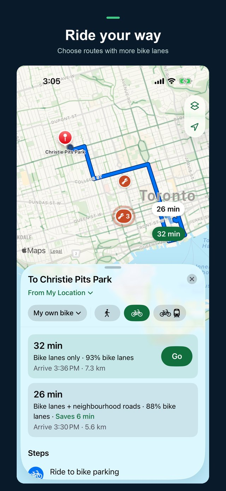
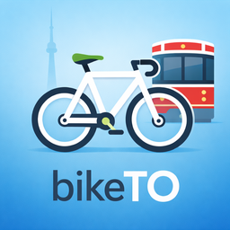
Safer bike navigation for Toronto, with Bike Share, bike parking and the TTC built in.
Live on the App Store · Free · No account, no ads, no tracking
Presented by Sterling Huang, creator of BikeTO
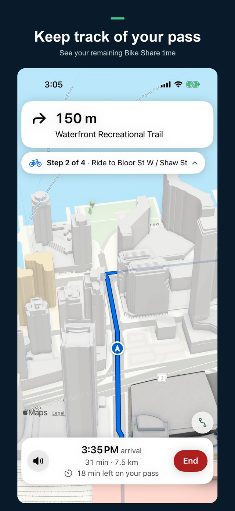
THE GAP
01
General map apps don’t let riders choose protected bike lanes over busy roads, or show how much of a route is on a bike lane.
02
Riders find a bike in the Bike Share app, plan the route in a maps app and check the TTC in a third.
03
Pass time running out, a full dock at the destination, nowhere to lock up: riders find out when it’s too late.
BikeTO brings the whole trip into one app, built on Toronto’s own open data.
BikeTO · Safer bike navigation for Toronto
2 / 15
BIKETO 2.0 AT A GLANCE
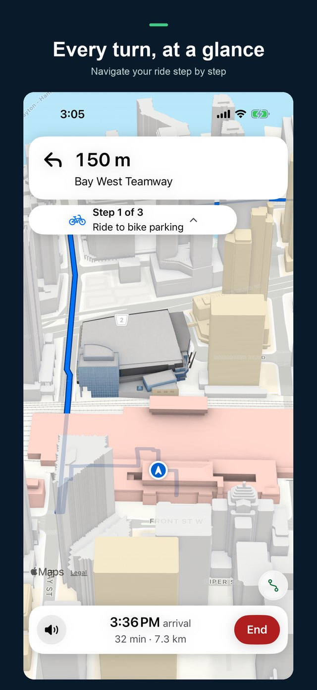
Bike lanes only, or bike lanes plus quiet neighbourhood roads.
Live bikes and docks, a pass countdown, and a new station if yours fills up.
Ride to the subway or bring your bike on board, with live TTC departures.
Spoken directions, rerouting and a Live Activity on the Lock Screen.
Own-bike trips end at a bike parking spot, with rack type and spaces.
No account, no ads, no tracking. Settings stay on the phone.
BikeTO · Safer bike navigation for Toronto
3 / 15
CORE FEATURE 1 OF 4
Why it matters to Bike Share
New and occasional riders get routes they are comfortable riding, which builds the confidence to ride again.
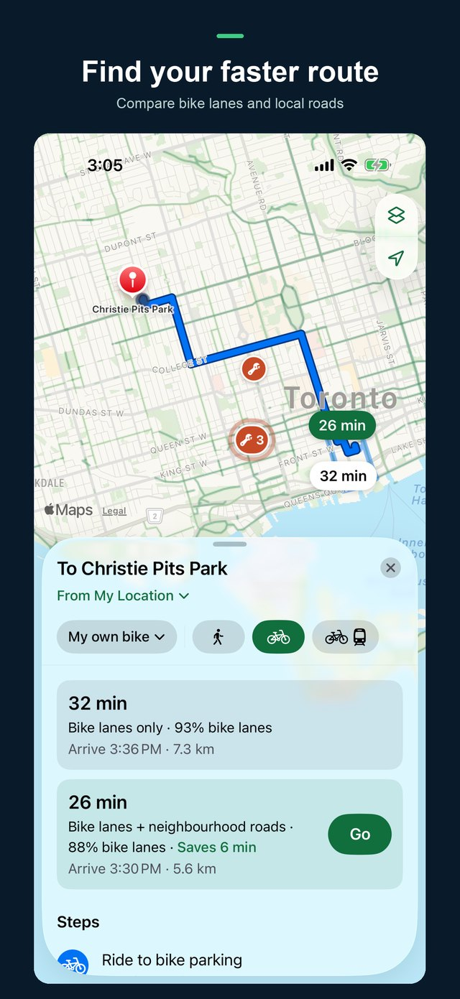
BikeTO · Safer bike navigation for Toronto
4 / 15
CORE FEATURE 2 OF 4
Why it matters to Bike Share
Helps riders avoid overtime fees and full-dock frustration, two moments that sour a trip.
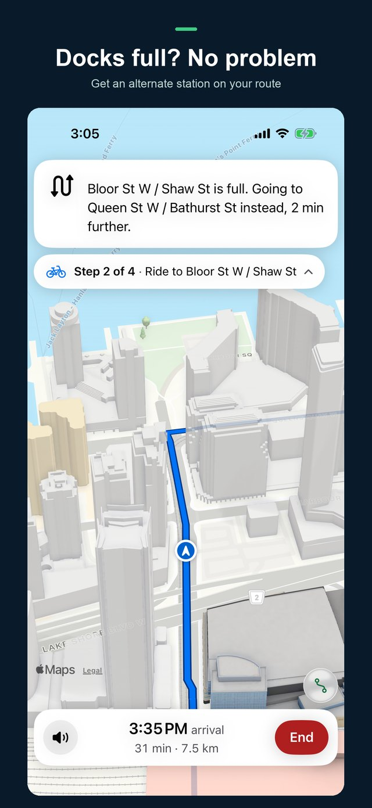
BikeTO · Safer bike navigation for Toronto
5 / 15
CORE FEATURE 3 OF 4
Why it matters to Bike Share
Positions Bike Share as the first and last kilometre of TTC trips.
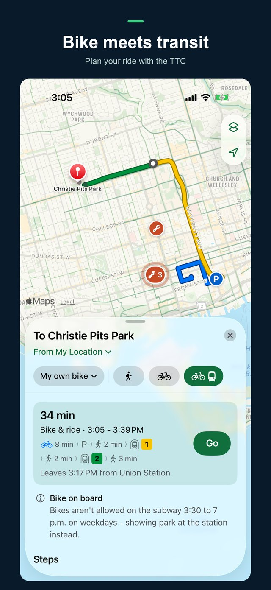
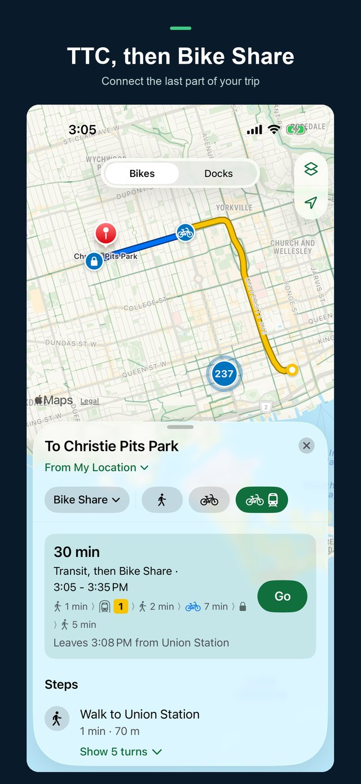
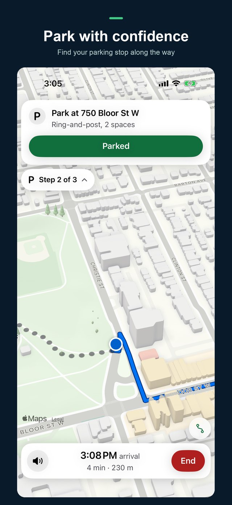
BikeTO · Safer bike navigation for Toronto
6 / 15
CORE FEATURE 4 OF 4
Why it matters to Bike Share
Hands-free guidance is safer guidance. A phone mount on Bike Share bikes would complete the picture.
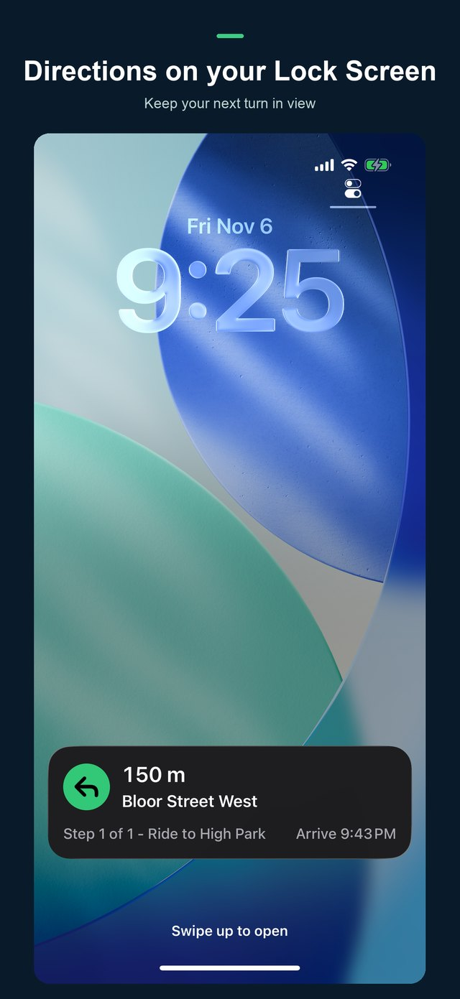
BikeTO · Safer bike navigation for Toronto
7 / 15
VIDEO DEMO 1 OF 3
1. Plan the trip
Compare routes and add the TTC
2. Get to a bike
Walk to a station with bikes
3. Ride and dock
Pass time in view, then a dock
BikeTO · Safer bike navigation for Toronto
8 / 15
VIDEO DEMO 2 OF 3
BikeTO compares Bike Share routes with “Bike Share, then transit” on Line 1, listing every walk, ride, dock and train step.
“Bike & ride” parks the bike at the stop; “Bike on board” brings it on the bus. Both show live departures.
Bike Share rider
Bike Share, then Line 1
Own-bike rider
Bike & ride or bike on board
BikeTO · Safer bike navigation for Toronto
9 / 15
VIDEO DEMO 3 OF 3
Two-minute screen recording of BikeTO’s navigation mode on iPhone. The trip keeps going on the Lock Screen and in the Dynamic Island.
BikeTO · Safer bike navigation for Toronto
10 / 15
HOW IT WORKS
City of Toronto Open Data
Cycling network and bike parking
OpenStreetMap
Every street and path in Toronto
Bike Share Toronto
Live station feed: bikes and docks
TTC
Schedules for subway, streetcar and bus
Version 2.0 on the App Store. No account, no ads, no tracking: settings stay on the phone.
BikeTO · Safer bike navigation for Toronto
11 / 15
WHY IT MATTERS TO BIKE SHARE TORONTO
Routes that favour bike lanes and quiet streets help new riders try Bike Share, and come back.
Pass countdowns and full-dock rerouting deal with overtime fees and full stations before they happen.
Bike Share becomes the first and last kilometre of TTC trips, planned in one place.
BikeTO 2.0 is live on the App Store and built on open data, with no ads and no tracking.
BikeTO · Safer bike navigation for Toronto
12 / 15
CONCEPT RENDER
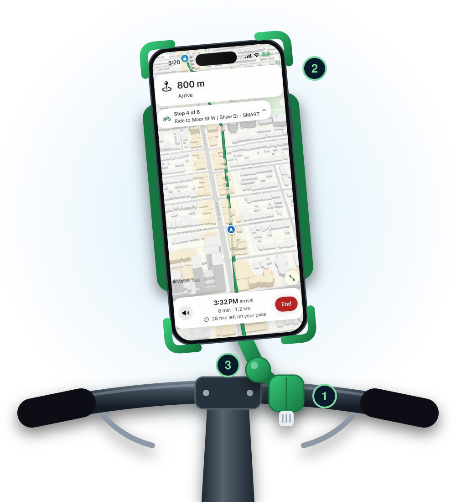
Tool-free clamp
Fits beside the stem, with no changes to the bike.
Four-corner cradle
Spring-loaded corners hold most phones, with or without a case.
Tilt joint
Angles the screen toward the rider, so a glance is enough.
Paired with BikeTO’s spoken directions and Lock Screen guidance, riders keep their eyes on the road.
Concept render for illustration; the 3D designs are ready to prototype with Bike Share.
BikeTO · Safer bike navigation for Toronto
13 / 15
THE ASK
OPTION 1
Riders scan a Bike Share bike in BikeTO to unlock it, and the ride flows straight into navigation, pass tracking and docking.
One app from planning to docking. Needs access to Bike Share’s rental and unlock platform, and member sign-in.
OPTION 2
Work with Bike Share’s team to add bike-lane routing, turn-by-turn guidance, pass countdowns and full-dock rerouting to the official app.
Plus 3D designs for phone attachments on Bike Share bikes, so riders can follow directions hands-free.
OPTION 3
Work with Bike Share to raise awareness of BikeTO as a partner app that helps Toronto cyclists navigate safely.
For example through the Bike Share app, website, newsletters, social media and station signage.
BikeTO · Safer bike navigation for Toronto
14 / 15
Next step: a working session with Bike Share’s product and partnerships team to choose a path.
Sterling Huang, creator of BikeTO